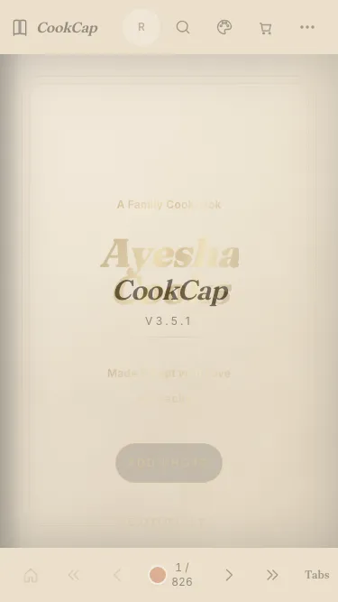

Illustrative story Illustrative story. People and data are fictional.
CookCap · Islamabad, Pakistan
How Mariam uses Cookcap
Mariam Saleem from Islamabad uses the app for learning recipes with cook mode. All people and numbers are fictional.
“Cook mode keeps the screen awake.”

Before and after
Illustrative numbers from a fictional week.
Before
15 minMinutes lost to chaos
After CookCap
2 minMinutes lost to chaos
A day with Mariam
-
Open app
Learning recipes with cook mode
-
Main task
They complete the core flow with sample data on device.
Watch it
A short walkthrough with captions. No autoplay with sound.
Read transcript
Mariam Saleem opens the app and completes a fictional sample flow.
Features Mariam uses
Illustrative story. People and data are fictional.